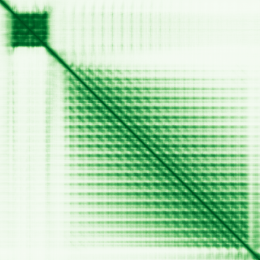

type: protein-evaluation gene: "DAZ2" date: 2026-06-02 tags: [protein-scout, nucleus-cytoplasm, evaluation] status: scored pm: 26 ---
DAZ2 核蛋白评估报告
1. 基本信息
| 项目 | 内容 |
|---|---|
| 基因名 / 别名 | DAZ2 (no known aliases) |
| 蛋白全称 | Deleted in azoospermia protein 2 |
| 蛋白大小 | 558 aa / 63.1 kDa |
| UniProt ID | Q13117 |
| AlphaFold | AF-Q13117-F1 (v6) |
2. 评分总览
| 维度 | 得分 | 满分 | 加权后 | 关键证据摘要 |
|---|---|---|---|---|
| 核定位特异性 | 7/10 | ×4 | 28 | UniProt Cytoplasm + Nucleus (ECO:0000269 实验); GO cytoplasm IDA + nucleus IEA |
| 蛋白大小 | 8/10 | ×1 | 8 | 558 aa (400-600 范围) |
| 研究新颖性 | 8/10 | ×5 | 40 | PubMed strict=26，≤40 档，高新颖性 |
| 三维结构 | 5/10 | ×3 | 15 | 无 PDB 结构; AF mean pLDDT 73.0, RRM 结构域预测良好 |
| 调控结构域 | 4/10 | ×2 | 8 | RNA-binding (RRM, IPR000504, PF00076)，非染色质调控 |
| PPI 网络 | 5/10 | ×3 | 15 | STRING 15; IntAct 15; DAZ1/BPY2 同源+精子发生网络 |
| 互证加分 | -- | -- | +0 | 无显著互证 |
| 加权总分 | 114/180 | |||
| 归一化总分 | 63.3/100 |
3. 详细分析
3.1 核定位证据
| 来源 | 定位 | 可信度 |
|---|---|---|
| UniProt | Cytoplasm (ECO:0000269 ×2); Nucleus (ECO:0000269) | 实验级 |
| GO-CC | cytoplasm (GO:0005737, IDA:UniProtKB); nucleus (GO:0005634, IEA) | 部分实验 |
| HPA IF | 无定位数据 (gene page found, no IF) | 不可用 |
HPA IF 状态: 无可用 IF 定位信息。UniProt 有实验证据支持 Cytoplasm + Nucleus 双定位。
结论: 实验证据支持核-胞质双定位，HPA 无 IF 数据。
3.2 蛋白大小评估
评价: 558 aa (63.1 kDa)，处于中等偏大范围 (400-600)。
3.3 研究现状
| 指标 | 数值 |
|---|---|
| PubMed strict (Title/Abstract+gene/protein) | 26 |
| PubMed symbol_only | 34 |
| PubMed broad | 40 |
关键文献: 1. Fernandes S et al. (2002). "High frequency of DAZ1/DAZ2 gene deletions in patients with severe oligozoospermia." *Mol Hum Reprod*. PMID: 11870237 2. Ferras C et al. (2004). "AZF and DAZ gene copy-specific deletion analysis in maturation arrest." *Mol Hum Reprod*. PMID: 15347736 3. Ghorbel M et al. (2014). "Combined deletion of DAZ2 and DAZ4 copies of Y chromosome DAZ gene is associated with male infertility." *Gene*. PMID: 24878370 4. Li Q et al. (2013). "Association of DAZ1/DAZ2 deletion with spermatogenic impairment." *World J Urol*. PMID: 23512232 5. A ZC et al. (2006). "Study on DAZ gene copy deletion in severe oligozoospermia." *Yi Chuan*. PMID: 16963411
评价: PubMed strict=26，高新颖性。研究几乎全部集中于男性不育和 Y 染色体微缺失，功能机制研究有限。
3.4 三维结构分析
| 指标 | 数值 |
|---|---|
| UniProt 长度 | 558 aa |
| PDB 条数 | 0 |
| AlphaFold mean pLDDT | 73.0 |
| pLDDT >90 | 31.7% |
| pLDDT 70-90 | 39.2% |
| pLDDT 50-70 | 6.3% |
| pLDDT <50 | 22.8% |
PAE 图:

评价: 无 PDB 结构，仅 AlphaFold 预测。pLDDT 73.0，RRM 结构域区域预测较可靠。22.8% 残基置信度 <50，C 端区域可能无序。
3.5 结构域分析
| 来源 | 结构域 |
|---|---|
| InterPro | IPR043628, IPR037551, IPR012677 (Nucleotide-binding alpha-beta plait), IPR035979 (RBD superfamily), IPR000504 (RRM) |
| Pfam | PF18872, PF00076 (RRM) |
染色质调控潜力分析: RNA 识别基序 (RRM) 为主，RNA 结合蛋白，非经典染色质调控。通过结合 mRNA 3'-UTR 调控翻译，而非直接转录调控。
3.6 PPI 网络
实验验证互作 (IntAct, physical association):
| Partner | 方法 | PMID | 功能类别 | 调控相关？ |
|---|---|---|---|---|
| ATXN1 | validated two hybrid | 32296183 | Transcription factor | Yes |
| FUBP1 | anti tag coIP | 33961781 | DNA/RNA binding | Yes |
| BMI1 | anti bait coIP | 34316702 | Polycomb, chromatin | Yes |
| CCT3/4/5/6A/8 | anti tag coIP | 33961781 | Chaperonin | No |
| AMY1A | anti tag coIP | 33961781 | Amylase | No |
STRING 预测互作 (combined score >0.7):
| Partner | Score | 实验分 | 功能类别 | 调控相关？ |
|---|---|---|---|---|
| DAZ1 | 0.999 | 0 | DAZ family homolog | No |
| CDY1 | 0.946 | 0.092 | Chromodomain Y | Yes |
| CDY2A | 0.901 | 0.086 | Chromodomain Y | Yes |
| BPY2B/BPY2C | 0.898 | 0 | Y-linked testis | No |
| USP9Y | 0.780 | 0 | Deubiquitinase | Partial |
| DDX3Y | 0.779 | 0.125 | RNA helicase | Partial |
评价: STRING 15 + IntAct 15。PPI 网络主要为 Y 染色体精子发生蛋白 (DAZ1, CDY1, BPY2 等)。IntAct 含 ATXN1 (转录因子)、BMI1 (Polycomb 染色质调控) 和 FUBP1 (DNA 结合) 互作，暗示潜在的核内调控功能。
3.7 多库互证
| 维度 | 来源 | 结果 | 是否一致 |
|---|---|---|---|
| 三维结构 | AlphaFold + PDB | PDB 0 | 仅预测 |
| 结构域 | UniProt/InterPro/Pfam | RRM 多库一致 | 一致 |
| PPI 网络 | STRING + IntAct | 精子发生网络 | 多源互证 |
| 核定位 | HPA/UniProt/GO | Cytoplasm + Nucleus | 部分一致 |
互证加分明细: 无显著额外互证加分。 总计: +0
4. 总体评价
推荐等级: **ooo (2/5)
核心优势: 1. 实验证据支持核-胞质双定位 2. IntAct 含 ATXN1、BMI1、FUBP1 等调控相关互作 3. 高新颖性 (PubMed strict=26)
风险/不确定性: 1. RNA 结合蛋白，非经典转录因子 2. 研究几乎全部集中于男性不育，无 TE 调控相关 3. Y 染色体特异性表达，细胞系选择受限 4. 无 PDB 结构
下一步建议:
- [ ] 验证 DAZ2 在非生殖细胞系中的表达
- [ ] 通过 RIP-seq 鉴定 DAZ2 结合的 RNA，关注 TE 衍生转录本
- [ ] 探索 BMI1/ATXN1 互作的核内功能意义
5. 数据来源
- GeneCards: https://www.genecards.org/cgi-bin/carddisp.pl?gene=DAZ2
- Protein Atlas: https://www.proteinatlas.org/ENSG00000205944-DAZ2
- PubMed: https://pubmed.ncbi.nlm.nih.gov/?term=%22DAZ2%22%5BTitle/Abstract%5D
- UniProt: https://www.uniprot.org/uniprot/Q13117
- STRING: https://string-db.org/network/9606.ENSG00000205944
- AlphaFold: https://alphafold.ebi.ac.uk/entry/Q13117
PPI 网络
| Partner | Source | Score/Evidence |
|---|---|---|
| DAZ1 | STRING | 0.999 |
| CDY1 | STRING | 0.946 |
| CDY2A | STRING | 0.901 |
| BPY2B | STRING | 0.898 |
| BPY2C | STRING | 0.898 |
| F20P5.23 | IntAct | psi-mi:"MI:1356"(validated two |
| ERF070 | IntAct | psi-mi:"MI:2277"(Cr-two hybrid |
| ATXN1 | IntAct | psi-mi:"MI:1356"(validated two |
PAE 图像说明: AlphaFold PAE 图像已重新获取并嵌入（见下方 PAE 图像修正块）；结构判断仍结合 pLDDT 与 PAE 综合判断。
<!-- AF_PAE_REPAIR_START --> PAE 图像修正（2026-06-05）: AlphaFold 提供 predicted aligned error 图像；此前“PAE 图像暂无数据”的表述为未获取/未嵌入导致。